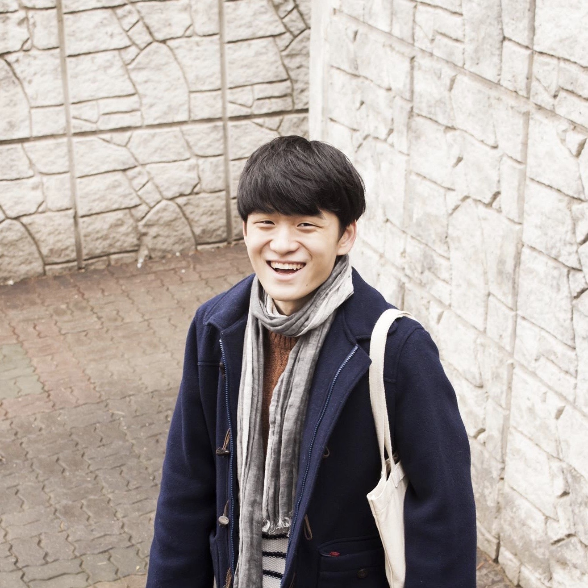
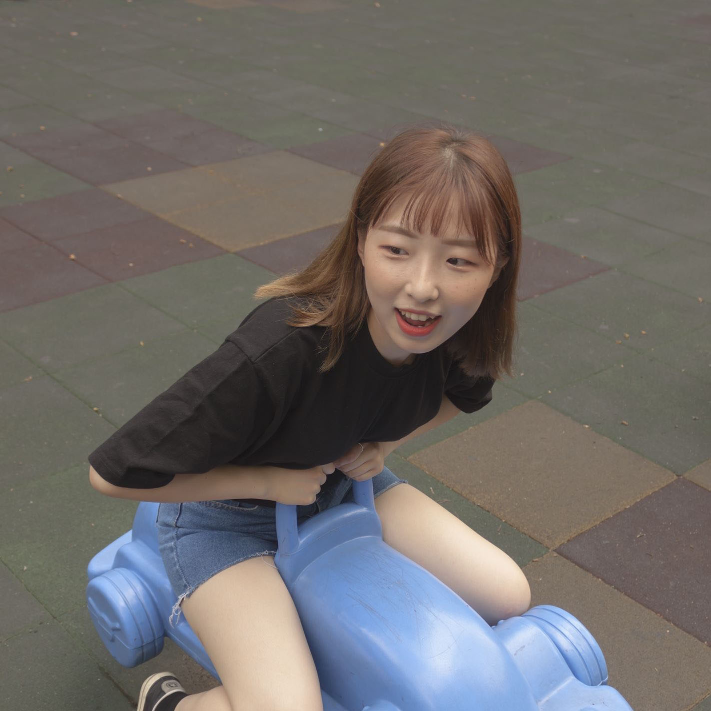
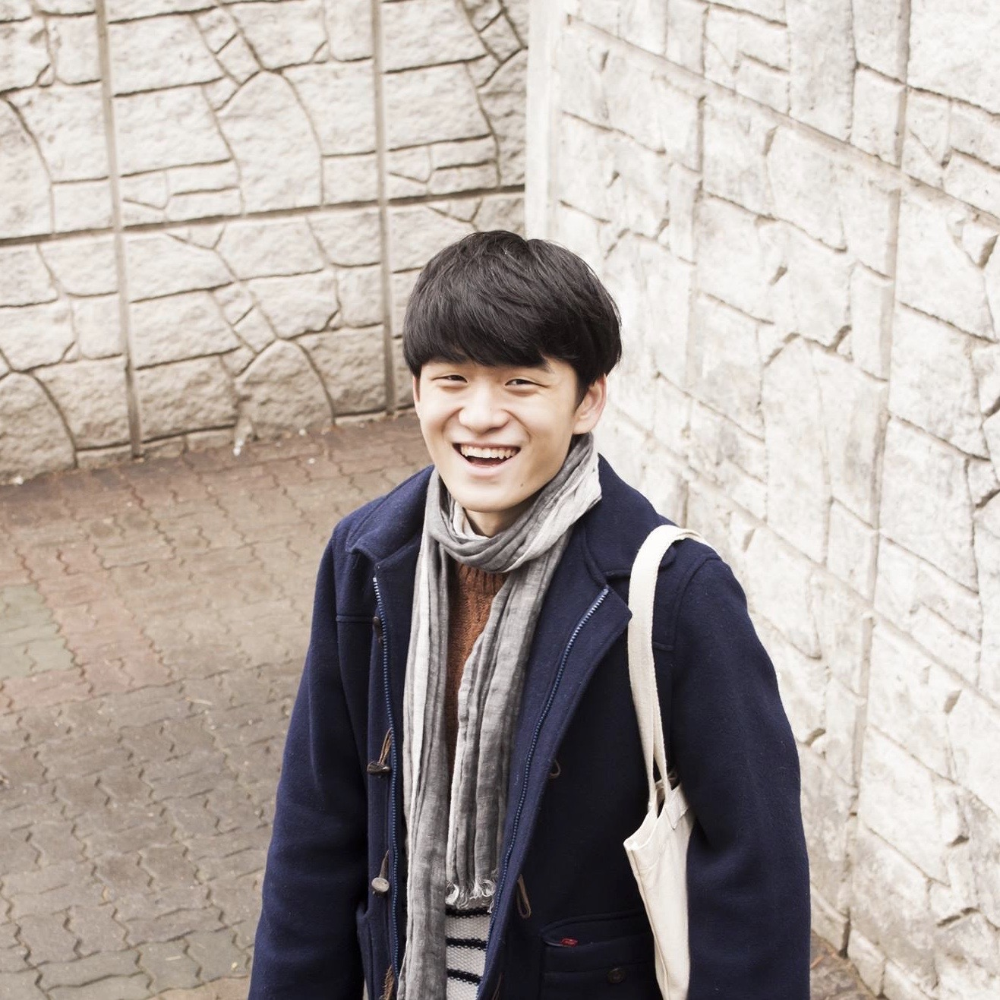
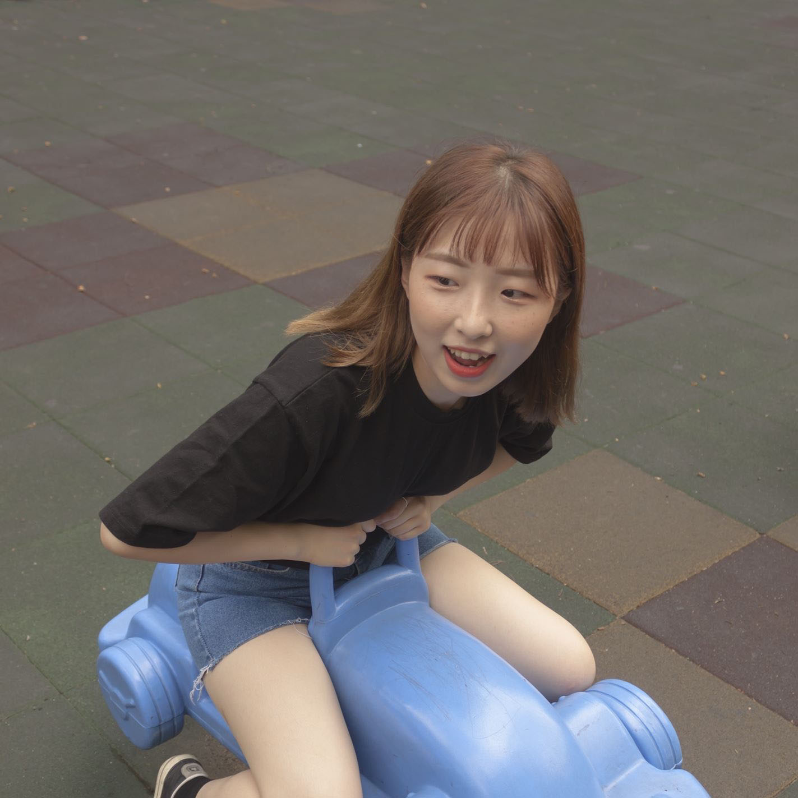

1) 편하게 말을 걸어주세요!
자연스러운 행동과 표정이 나와야합니다. 인위적인 모습은 보는 사람에게도 딱딱할 수 있고 부담스러울 수도 있거든요.
2) 모델이 알게 모르게 많이 찍어두세요!
사진은 한 장 찍어서 바로바로 알 수가 없습니다. 100장에 1장 건진다는 생각으로 계속해서, 많이 찍어주세요! 많이 찍으면 찍을 수록 모델분이 마음에 들어하는 사진은 많아질 수 밖에 없어요!
3) 다양한 각도에서 많이 찍어주세요!
셀카를 찍을때 왼쪽 얼굴, 오른쪽 얼굴이 서로 다른 느낌이 드는 것처럼 각도에 따라서 모델의 분위기나 모습이 조금씩 틀려질 수 있어요.
4) 자신감을 키워주세요!
사진 찍히는 걸 부담스러워 하시는 분이 간혹 있어요. 지금 표정이 정말 예쁘다! 지금 했던 포즈가 정말 잘 어울린다! 등등 모델의 자신감을 키워주면 긴장이 풀어지고 더욱 원활한 촬영이 가능해진답니다!
 


